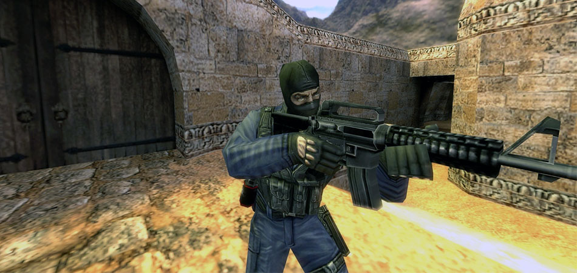
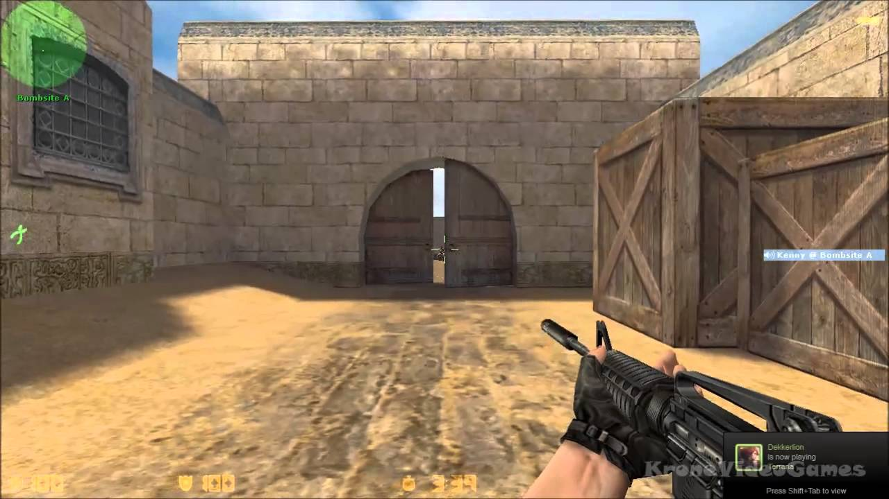
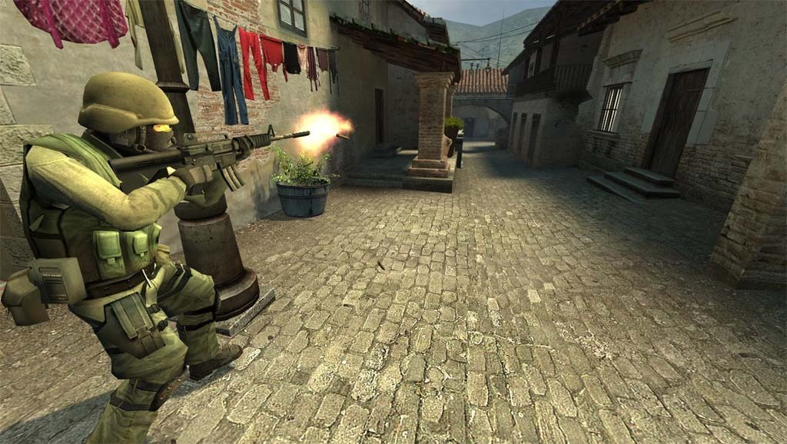
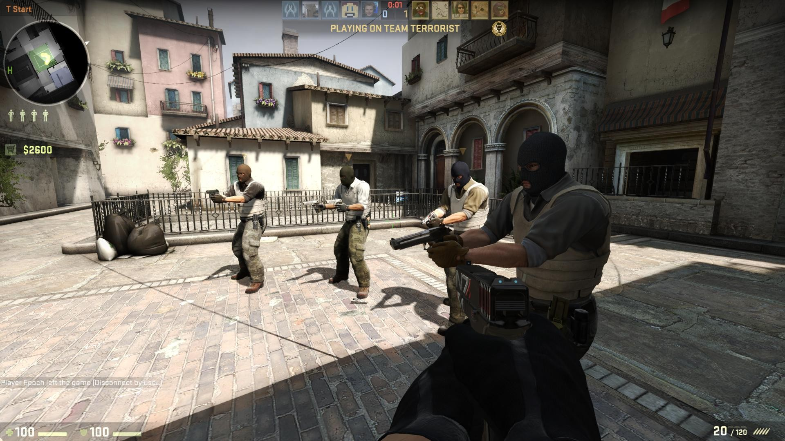
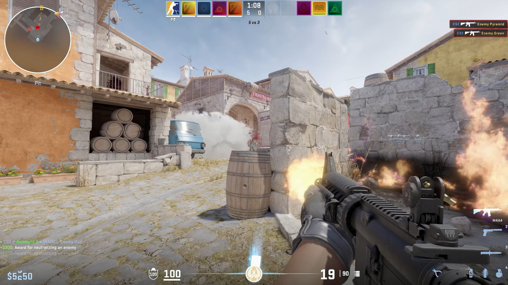

Counter-Strike
Компьютерная игра в жанре многопользовательского тактического шутера от первого лица, разрабатываемая компанией Valve.
Counter-Strike 1.6
Последняя версия CS. В неё играют на всех крупных чемпионатах. Еще не заброшена, но крупных изменений давно не видели. Кроме исправленных багов разработчики добавили в игру несколько новых моделей оружия и щит.
Counter-Strike: Condition Zero
По сути, та же 1.6, но на переработанном GoldSrc. В одиночном режиме добавлена возможность нанимать ботов и получать награды за игру.
Counter-Strike: Source
Перенос оригинальной игры на новый движок Source. На данный момент по геймплею не уступает 1.6, а то и значительно превосходит возросшим реализмом, отсутствием закупки патронов (меньше тратится внутри-игровой валюты).
Counter-Strike: Global Offensive
Абсолютно тот же геймплей, но с обновленным движком, графикой, слегка переделанными картами, оружием, с торговой площадкой и Мастерской Steam.
Counter-Strike 2
Ребрендинг и перенос Counter-Strike: Global Offensive на новый движок Source 2. В игре были представлены улучшенная графика, слегка переделанные и полностью переделанные картами, а также улучшенные механики игры.
DOTA 2
Многопользовательская командная компьютерная игра в жанре MOBA, разработанная и изданная корпорацией Valve.

League of Legends
Многопользовательская компьютерная игра в жанре MOBA, разработанная и выпущенная американской компанией Riot Games в 2009 году для платформ Microsoft Windows и macOS.

Valorant
Valorant — многопользовательская компьютерная игра, разработанная и издаваемая компанией Riot Games. Valorant является первой игрой Riot Games в жанре шутер от первого лица.